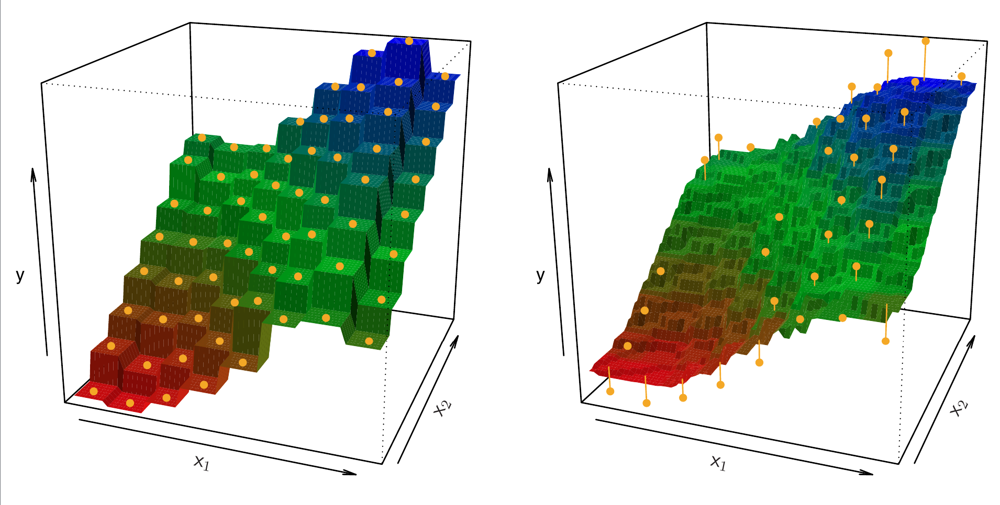
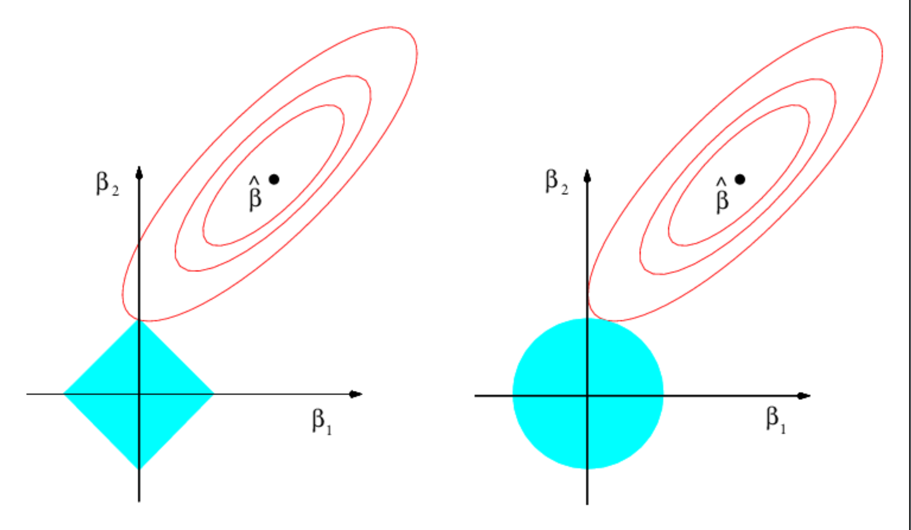
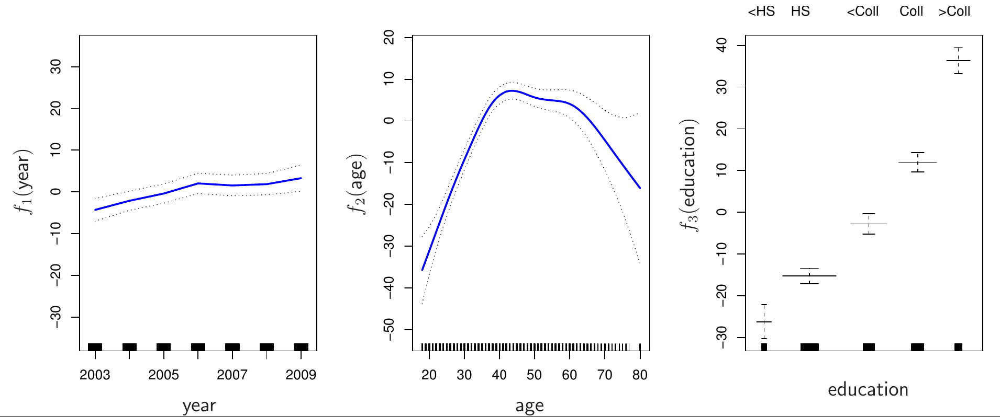
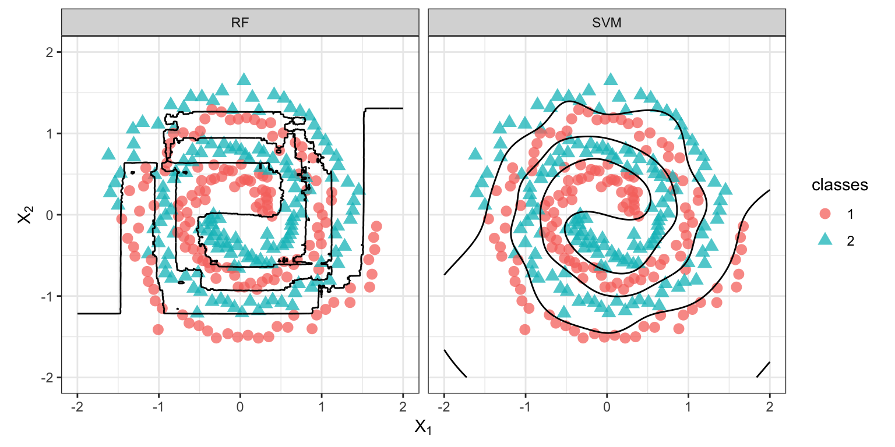
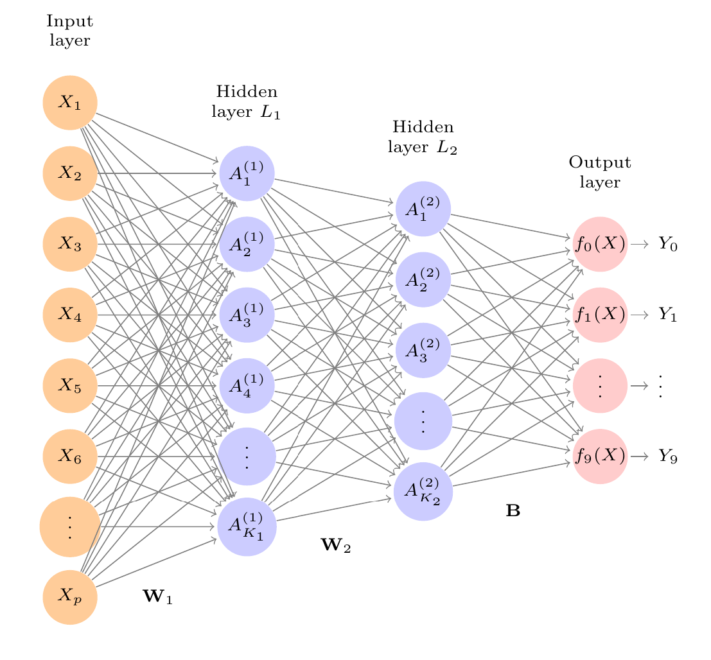

library(dplyr)
library(tidyr)
library(ggplot2)
library(caret)
library(doParallel)
library(mlbench)
library(car)
library(effects)
library(faraway)3 Algoritmos y modelos
En este apartado, vamos a presentar algunos modelos de aprendizaje máquina supervisado que, posteriormente, mostraremos cómo se pueden entrenar y evaluar con R. Necesitaremos los siguientes paquetes.
Además, será necesario tener instalados varios paquetes más que caret emplea internamente para ajustar cada tipo de algoritmo o modelo solicitado.
| Paquete | Modelo |
|---|---|
stepPlr |
Reg. Logística penalizada |
adabag |
Adaboost |
mgcv |
GAM |
gam |
GAM |
xgboost |
XGBoost |
randomForest |
Random Forests |
kernlab |
SVM |
Antes de comenzar, es importante hacer una distinción entre dos tipos de modelos o algoritmos (James, 2021):
Modelos paramétricos: son aquellos en los que se utiliza una función \(f(X)\) para predecir la salida, cuya forma viene determinada por una serie de parámetros que podemos ajustar a partir de los datos. Un ejemplo sería un modelo de regresión lineal.
Modelos no paramétricos: estos no asumen una forma paramétrica para la función de predicción \(f(X)\), ofreciendo una alternativa más flexible para resolver el problema de regresión.
En este capítulo vamos a utilizar el paquete caret en modo de ejecución paralela, para aprovechar las capacidades multi-núcleo de la mayoría de computadores modernos.
library(doParallel)
cl <- makePSOCKcluster(5) # 5 cores para proc. paralelo
registerDoParallel(cl)3.1 Datasets
Dataset: Sonar: El objetivo es discriminar entre dos tipos de blancos detectados con un sistema sónar (Gorman & Sejnowski, 1988):
- Cilindro metálico.
- Roca aproximadamente cilíndrica.
Está incluido en el paquete mlbench Blake & Merz (1998).
mlbench::Sonar.
| Descripción | Valor |
|---|---|
| Tipo de problema | Clasificación binaria (supervisada) |
| Respuesta | Class; etiquetas: M o R |
| Variables (inputs) | 60; rango \([0.0, 1.0]\) |
| Observaciones | 208 |
| Objetivo | Distinguir tipo de blanco sónar |
| Más información | ?mlbench::Sonar |
3.1.1 Particionado de datos
Dataset: mlbench::Sonar.
La preparación esta documentada en el paquete caret.
data(Sonar)
SonarData = Sonar[,c(1,11,17,23,28,34,40,45,56,61)]
set.seed(107)
inTrain <- createDataPartition(
y = SonarData$Class, # se necesitan los datos de la salida
p = .75, # 75% datos para entrenamiento
list = FALSE
)
## Formato de resultados
## La salidad es un conjunto de enteros que representan los
## índices de las filas en el dataset original escogidos para
## entrar en el training set.
str(inTrain) int [1:157, 1] 1 2 3 4 5 7 10 11 12 13 ...
- attr(*, "dimnames")=List of 2
..$ : NULL
..$ : chr "Resample1"training <- SonarData[ inTrain,]
testing <- SonarData[-inTrain,]
nrow(training)[1] 157nrow(testing)[1] 51Sólo queda configurar es sistema de evaluación cruzada para medir el rendimiento de los modelos antes de enfrentarse al conjunto final de prueba, así como para ajustar los hiperparámetros que sean necesarios. En todos los ejemplos aplicaremos validación cruzada con 5 grupos.
config_control <- trainControl(
method = 'cv', # k-fold cross-validation
# method = 'repeatedcv', # k-fold cross-validation repetida (variante)
number = 5, # número de grupos o iteraciones de remuestreo
# repeats = 10, # número de conjuntos completos de grupos a computar
savePredictions = 'final', # guardar las predicciones para ajuste óptimo de hiperparámetros
classProbs = TRUE, # se devuelven las probabilidades de clase
summaryFunction=twoClassSummary # tipo de función para resumir resultados (según el tipo de problema)
)3.2 K vecinos más cercanos (K-NN)
Se trata de un modelo que puede realizar funciones de regresión o clasificación. En el caso de la regresión, fijado un valor para \(K\) y un punto de predicción \(x_0\), se identifican las \(K\) observaciones del conjunto de entrenamiento más cercanas a \(x_0\), denotadas por \(\mathcal{N}_0\). Entonces, se estima \(f(x_0)\) como el valor promedio de todas las respuestas contenidas en \(\mathcal{N}_0\), es decir:
\[ \hat{f}(x_0) = \frac{1}{K}\sum_{x_i \in \mathcal{N}_0} \,y_i. \tag{3.1}\]

Este modelo se basa en la premisa de que las observaciones similares se encontrarán próximas entre sí dentro del espacio de representación de los datos. Sin embargo, no siempre es fácil encontrar espacios de representación que describan nuestro problema de forma adecuada para que se cumpla esta premisa. En todo caso, este modelo ha demostrado ser muy útil en gran variedad de problemas.
En la Sec. 8.2 de (Boehmke & Greenwell, 2019), se discuten algunas medidas de disimilaridad que se pueden computar entre pares de observaciones. Algunas funciones de distancia son la familia de distancias Minkowski, incluyendo Manhattan (L1), Euclídea (L2) o Chebyshev (Linf); la distancia de Haversine (para datos geolocalizados sobre la superficie terrestre); la similaridad del coseno (para documentos o datos textuales) o la distancia de Jaccard.
El modelo KNN para clasificación es muy directo. Sea \(K\) un número entero positivo y \(x_0\) una observación que deseamos clasificar. Primero, el algoritmo identifica las \(K\) observaciones más cercanas a \(x_0\), que denotamos por \(\mathcal{N}_0\). Entonces, se estima la probabilidad condicional para la clase \(j\) como la fracción de puntos pertenecientes a \(\mathcal{N}_0\) cuyos valores de respuesta son la clase \(j\). En otras palabras, se asigna la etiqueta de salida de la mayorí ade vecinos cercanos como la clase más probable para la salida a predecir para el punto \(x_0\):
\[ P(Y=j \mid X=x_0)= \frac{1}{K}\sum_{i \in \mathcal{N}_0} \,I(y_i = j). \tag{3.2}\]
3.2.1 Ajuste de un modelo de clasificación KNN
En el siguiente ejemplo se muestra cómo ajustar un modelo KNN para clasificación con el dataset mlbench::Sonar. La métrica que emplearemos para ajustar el hiperparámetro \(K\) es la curva ROC, presentada en la Sección 4.2.2.
model_knn = train(Class ~ ., data=training, method='knn',
metric="ROC", trControl = config_control)
model_knnk-Nearest Neighbors
157 samples
9 predictor
2 classes: 'M', 'R'
No pre-processing
Resampling: Cross-Validated (5 fold)
Summary of sample sizes: 126, 126, 126, 125, 125
Resampling results across tuning parameters:
k ROC Sens Spec
5 0.8092927 0.8213235 0.6733333
7 0.7894853 0.8213235 0.5895238
9 0.7808088 0.8095588 0.6285714
ROC was used to select the optimal model using the largest value.
The final value used for the model was k = 5.3.3 Modelos lineales
Los modelos lineales asumen que existe una relación lineal entre las variables de entrada (inputs, features) y la salida que se desea predecir. Cuidado, porque esto no implica necesariamente que la forma de la función ajustada sea una línea recta, una confusión bastante común que suele asaltar a muchas personas.
El dos ejemplos muy básicos de este tipo de modelos son la regresión lineal simple y la regresión lineal múltiple, presentados en detalle en el Capítulo 4 de (Boehmke & Greenwell, 2019), así como en el Capítulo 3 de (James, 2021). Sin embargo, un polinomio de grado (parábola) sigue siendo un modelo lineal ya que, aunque su forma son sea una línea recta, la ecuación se sigue expresando como una combinación lineal de varias componentes.
Los Modelos Lineales Generalizados (GLM por sus siglas en inglés) extienden el modelo lineal original para responder a muchos tipos de problemas: variables respuesta que no siguen una distribución normal, relaciones no lineales (no recta) entre las entradas y la variable de salida, o salidas de tipo categórico (binarias, multinomiales, ordenadas, etc.).
Este tipo de modelos consta de tres elementos (Agresti, 2015):
Función de enlace: define una conexión entre el valor esperado (media) de la variable respuesta con la combinación lineal de las variables de entrada, lo que permite definir modelos que no sigan la forma de una recta (más flexibles), capturando relaciones más complejas.
Distribución de probabilidad (componente aleatoria): describe el “ruido” o variabilidad de los datos alrededor del valor promedio que se predice. Distribuciones habituales son la Normal, Binomial o Poisson.
Estructura lineal: todas las variables de entrada se relacionan entre sí mediante una combinación lineal, ponderadas por coeficientes que se ajustan a partir de los datos de entrenamiento. Sin embargo, la estructura generalizada del modelo permite asumir formas no lineales, así como incorporar variables de entrada categóricas, mediante la codificación adecuada.
La Tabla 3.3 presenta algunos modelos GLM frecuentemente empleados.
| Modelo | Comp. aleatoria | Col3 |
|---|---|---|
| Regresión lineal | Normal | Cuantitativas o cualitativas |
| Regresión logística | Binomial | Cuantitativas o cualitativas |
| LogLinear | Poisson | Cualitativas |
| Reg. de Poisson | Poisson | Cuantitativas o cualitativas |
3.3.1 Ajuste de un modelo de clasificación LR
Seguidamente, se presenta el proceso de ajuste y evaluación de un modelo de clasificación mediante regresión logística (LR). Este modelo estima una probabilidad a la salida y debemos establecer un umbral o threshold para dicha probabilidad estimada, a partir de cual (para valores superiores o iguales) asignamos una de las dos posibles etiquetas de salida (por ejemplo, 1). Para una probabilidad estimada menor que el umbral asignamos la otra posible etiqueta de salida (por ejemplo, 0).
# Regresión logística
model_glm <- train(
Class ~ .,
data = training,
method = "glm",
metric = "ROC",
trControl = config_control
)
model_glmGeneralized Linear Model
157 samples
9 predictor
2 classes: 'M', 'R'
No pre-processing
Resampling: Cross-Validated (5 fold)
Summary of sample sizes: 125, 126, 126, 125, 126
Resampling results:
ROC Sens Spec
0.8034314 0.7610294 0.7828571# Recuperamos los coeficientes del modelo final ajustado
summary(model_glm$finalModel)
Call:
NULL
Coefficients:
Estimate Std. Error z value Pr(>|z|)
(Intercept) 2.4778 1.5031 1.648 0.099268 .
V1 -17.1009 12.1553 -1.407 0.159466
V11 -8.2378 2.3484 -3.508 0.000452 ***
V17 2.3566 1.0500 2.244 0.024808 *
V23 -2.3698 1.0091 -2.348 0.018859 *
V28 0.4797 0.9750 0.492 0.622699
V34 2.0068 1.0909 1.840 0.065818 .
V40 3.3099 1.5339 2.158 0.030933 *
V45 -8.4562 2.1913 -3.859 0.000114 ***
V56 -42.1597 42.1564 -1.000 0.317273
---
Signif. codes: 0 '***' 0.001 '**' 0.01 '*' 0.05 '.' 0.1 ' ' 1
(Dispersion parameter for binomial family taken to be 1)
Null deviance: 216.88 on 156 degrees of freedom
Residual deviance: 144.85 on 147 degrees of freedom
AIC: 164.85
Number of Fisher Scoring iterations: 53.3.2 Regularización en modelos lineales
En los conjuntos de datos actuales, normalmente de gran tamaño, existe el riesgo de que los modelos lineales tiendan al sobreajuste de los datos de entrenamiento, incrementando nuestro error de generalización. Una estrategia muy útil para restringir este efecto pernicioso es la regularización del modelo, que consiste en aplicar una serie de “penalizaciones” a los coeficientes estimados para reducir la varianza (dentro del compromiso varianza-sesgo) y así mantener a raya el problema del sobreajuste.
Tres opciones muy comunes de regularización son:
Penalización Ridge: modifica la función objetivo de ajuste del modelo con un término controlado por un hiperparámetro \(\lambda\). Cuanto más crece el valor asignado a \(\lambda\) más se fuerza a que los coeficientes del modelo se vayan haciendo cada vez más pequeños, aunque sin llegar a anularse. Véase el Apartado 6.2.1 de (Boehmke & Greenwell, 2019).
Penalización Lasso: altera la función objetivo para ajustar el modelo con un térmio también controlado por un hiperparámetro \(\lambda\). Sin embargo, al contrario que en el caso anterior, cuando \(\lambda\) crece se van anulando progresivamente más coeficientes de la función de predicción, lo que constituye un método más drástico de selección de variables y simplificación de nuestro modelo. Véase el Apartado 6.2.2 de (Boehmke & Greenwell, 2019).
Elastic net: es una solución intermedia entre los dos casos anteriores, introduciendo simultáneamente ambos tipos de penalización (Ridge y Lasso), cada uno de ellos controlado por un hiperparámetro de penalización, \(\lambda_1\) y \(\lambda_2\), respectivamente. Véase el Apartado 6.2.3 de (Boehmke & Greenwell, 2019).
En la Figura 3.2 se representan los errores (todos los puntos sobre una elipse tienen el mismo valor de RSS) y las funciones de restricción impuestas en el caso de la penalización Lasso y Ridge. Podemos observar como en el caso del Lasso las restricciones tienen aristas, lo que hace que la intersección entre el contorno y la región de restricción se produzca sobre el eje. Cuando esto ocurre, los coeficientes de la función de regresión se anulan. Sin embargo, en Ridge el punto de intersección no llega a tocar el eje, por lo que los coeficientes no llegan a anularse.

3.4 Extensiones del modelo lineal
Además de los modelos polinómicos o los GLM descritos anteriormente, existen más extensiones de los modelos lineales. La aproximación común a muchos de ellos es utilizar funciones polinómicas con formas suaves para ir ajustando tramos de la función de predicción. En consecuencia, la superposición (combinación lineal) de estas funciones suaves dará como resultado un modelo tremendamente flexible que se puede adaptar a problemas muy complicados.
Un primer ejemplo son los modelos MARS (Multivariate Adaptive Regression Splines), presentados en el Capítulo 7 de (Boehmke & Greenwell, 2019). Otro ejemplo son los modelos GAM (Generalized Additive Models) que se explican en la Sección 7.7 de (James, 2021). En el caso de estos últimos se extiende el modelo lineal manteniendo la combinación aditiva (suma) de los componentes de predicción. Sin embargo, en cada componente se emplea una función lineal \(f_j(x_{ij})\), cuya forma debemos estimar a partir de los datos, según la Ecuación 3.3:
\[ y_i = \beta_0 + \sum_{j=1}^{p}f_j(x_{ij})+\epsilon_i \tag{3.3}\]
La Figura 3.3 muestra un ejemplo del resultado de ajustar un modelo GAM utilizando dos variables de entrada cuantitativas y una cualitativa.

3.4.1 Ajuste de un modelo GAM para clasificación
Los modelos GAM pueden aplicarse tanto a problemas de regresión como de clasificación. En el paquete caret, podemos escoger ajustar un modelo de este tipo con el paquete mgcv o bien con el paquete gam.
En este caso, podremos ver que la función de enlace (link function) establecida para relacionar la salida con la combinación lineal de los regresores es logit.
model_gam_mgcv = train(Class ~ ., data=training, method='gam',
metric="ROC", trControl = config_control)
model_gam_mgcvGeneralized Additive Model using Splines
157 samples
9 predictor
2 classes: 'M', 'R'
No pre-processing
Resampling: Cross-Validated (5 fold)
Summary of sample sizes: 125, 126, 126, 125, 126
Resampling results across tuning parameters:
select ROC Sens Spec
FALSE 0.7728817 0.8095588 0.6171429
TRUE 0.7928011 0.7500000 0.7266667
Tuning parameter 'method' was held constant at a value of GCV.Cp
ROC was used to select the optimal model using the largest value.
The final values used for the model were select = TRUE and method = GCV.Cp.summary(model_gam_mgcv$finalModel)
Family: binomial
Link function: logit
Formula:
.outcome ~ s(V56) + s(V1) + s(V23) + s(V28) + s(V17) + s(V11) +
s(V34) + s(V40) + s(V45)
Parametric coefficients:
Estimate Std. Error z value Pr(>|z|)
(Intercept) -0.3515 0.2604 -1.35 0.177
Approximate significance of smooth terms:
edf Ref.df Chi.sq p-value
s(V56) 0.7416 9 1.815 0.108066
s(V1) 0.7876 9 2.435 0.071601 .
s(V23) 2.0615 9 7.979 0.009524 **
s(V28) 2.4275 9 7.407 0.020306 *
s(V17) 1.7828 9 6.784 0.013827 *
s(V11) 2.0751 9 16.218 5.11e-05 ***
s(V34) 3.8758 9 10.983 0.012560 *
s(V40) 1.6428 9 3.822 0.074852 .
s(V45) 1.0000 9 14.341 0.000108 ***
---
Signif. codes: 0 '***' 0.001 '**' 0.01 '*' 0.05 '.' 0.1 ' ' 1
R-sq.(adj) = 0.548 Deviance explained = 53.3%
UBRE = -0.1328 Scale est. = 1 n = 157model_gam = train(Class ~ ., data=training, method='gamSpline',
metric="ROC", trControl = config_control)
model_gamGeneralized Additive Model using Splines
157 samples
9 predictor
2 classes: 'M', 'R'
No pre-processing
Resampling: Cross-Validated (5 fold)
Summary of sample sizes: 126, 125, 126, 125, 126
Resampling results across tuning parameters:
df ROC Sens Spec
1 0.8047129 0.7639706 0.7295238
2 0.8616597 0.8110294 0.7961905
3 0.8607353 0.7992647 0.7676190
ROC was used to select the optimal model using the largest value.
The final value used for the model was df = 2.coef(model_gam$finalModel) (Intercept) s(V56, df = 2) s(V1, df = 2) s(V23, df = 2) s(V28, df = 2)
2.174201 -53.809688 -17.909083 -2.124357 0.518643
s(V17, df = 2) s(V11, df = 2) s(V34, df = 2) s(V40, df = 2) s(V45, df = 2)
2.457338 -6.963477 2.165397 3.161222 -9.148652 3.5 Máquinas de vector soporte (SVM)
Las SVM son ejemplos de modelos de clasificación (salida cualitativa), en los que el objetivo es encontrar un hiperplano que separe de la mejor forma posible los elementos pertenecientes a dos grupos (asumiendo que la salida es una variable binaria).
La Figura 3.4 muestra cómo se identifican los llamados “vectores soporte” para definir la frontera de separación entre los puntos pertenecientes a los dos grupos de la variable de salida, para el caso de un clasficador de margen rígido (es decir, que no admite que puntos de uno de los grupos desborden la frontera con el otro grupo).

Lo normal es utilizar una versión más flexible de este algoritmo, que tolera que existan puntos mal clasificados (i.e. en el lado incorrecto de la frontera), dentro de un cierto margen de error. No obstante, la verdadera clave de estos modelos es que aplican el llamado kernel trick, una argucia matemática que nos permite representar los datos en un espacio alternativo en el que la separación entre las fronteras sea calculable. Matemáticamente, entender esta herramienta implica el manejo de funciones núcleo (kernel functions) y comprender los Espacios de Hilbert de Núcleo Reproductor (RKHS). Puedes consultar estos apuntes de un profesor de UCL para una introducción a estos temas.
En la práctica, el hecho de que no podamos apreciar directamente los detalles del espacio alternativo en el que se están representando los datos hace que a estos modelos se les considere en cierta medida como de “caja negra” (black-box models). En consecuencia, otras de las limitaciones es que no resulta nada evidente explicar el papel que juega cada una de las variables en la identificación de la frontera de separación entre clases.

3.5.1 Ajuste de un modelo SVM (RBF)
Mostramos un ejemplo de cómo entrenar un modelo SVM, utilizando como función kernel la función de base radial (Radial Basis Function). Los hiperparámetros que controlan la complejidad del modelo son sigma y C.
model_svmRadial = train(Class ~ ., data=training, method='svmRadial',
metric="ROC", tuneLength=15, trControl = config_control)
model_svmRadialSupport Vector Machines with Radial Basis Function Kernel
157 samples
9 predictor
2 classes: 'M', 'R'
No pre-processing
Resampling: Cross-Validated (5 fold)
Summary of sample sizes: 125, 125, 127, 125, 126
Resampling results across tuning parameters:
C ROC Sens Spec
0.25 0.8440616 0.8441176 0.7104762
0.50 0.8624300 0.8316176 0.7095238
1.00 0.8698669 0.8323529 0.7371429
2.00 0.8789391 0.8198529 0.7514286
4.00 0.8760784 0.8198529 0.7390476
8.00 0.8634139 0.8198529 0.7657143
16.00 0.8351225 0.8198529 0.7257143
32.00 0.8435609 0.8080882 0.7123810
64.00 0.8480917 0.7705882 0.7266667
128.00 0.8480917 0.8308824 0.6990476
256.00 0.8480917 0.7955882 0.7123810
512.00 0.8480917 0.7955882 0.6990476
1024.00 0.8480917 0.7955882 0.6990476
2048.00 0.8480917 0.7838235 0.6980952
4096.00 0.8480917 0.8191176 0.6990476
Tuning parameter 'sigma' was held constant at a value of 0.07543981
ROC was used to select the optimal model using the largest value.
The final values used for the model were sigma = 0.07543981 and C = 2.3.6 Modelos probabilísticos: Naïve Bayes
Un ejemplo de modelos de clasificación probabilísticos es el llamado Naïve Bayes (Bayes ingenuo), cuyo funcionamiento se basa en una aplicación directa del Teorema de Bayes. Se emplean con frecuencia en problemas de clasificación con datos textuales, cuando tenemos muchas variables de entrada o bien cuando el rango de valores de las variables de entrada es muy amplio.
Recordemos que el Teorema de Bayes viene dado por:
\[ P(B \mid A) = \frac{P(B)P(A \mid B)}{P(A)} \tag{3.4}\]
Si consideramos que las variables predictoras son independientes entre sí, entonces tenemos que la fórmula de predicción es:
\[ P(Y_k \mid X_1, \dots, X_p) = \frac{P(Y_k)\prod_{j=1}^p P(X_j \mid Y_k)}{P(X_1, X_2, \dots, X_p)} \tag{3.5}\]
Puesto que el denominador es una constante, nos centramos en calcular el valor del numerador para poder comparar las probabilidades condicionadas a los valores de las variables de entrada. La clase predicha maximiza la expresión:
\[ \underset{x}{\arg\max} \left\{ P(Y_k) \prod_{j=1}^p P(X_j \mid Y_k)\right\}. \]
3.7 Redes neuronales y aprendizaje profundo
Muchos modelos de aprendizaje automático solamente incorporan una o dos capas de transformación de datos para aprender la representación de los datos de salida. Estos modelos se denominan superficiales (shallow models). En contraste, los modelos profundos (deep models) siguen una aproximación multicapa para aprender las representaciones de los datos. El caso más habitual es el de usar múltiples capas de redes neuronales. El Capítulo 13 de (Boehmke & Greenwell, 2019) y el Capítulo 10 de (James, 2021) proporcionan dos buenas introducciones a este tipo de modelos.
La Figura 3.6 muestra el diseño de una red neuronal con dos capas ocultas que podría utilizarse para predecir los 10 posibles valores de salida del dataset MNIST, con imágenes de cifras manuscritas.

La clave para que una red neuronal de aprendizaje profundo se autoajuste en base a los datos de entrenamiento es un proceso denominado retropropagación (backpropagation). Este proceso se explica, por ejemplo, en la Sec. 13.5 de (Boehmke & Greenwell, 2019), así como en la Sec. 10.7.1 de (James, 2021), entre otras muchas fuentes.
Videotutorial sobre aprendizaje profundo
El sitio web https://www.3blue1brown.com/ contiene un extenso catálogo de videotutoriales y sesiones formativas sobrfe muchos temas de interés, como redes neuronales, álgebra o cálculo.
El vídeo What is backpropagation really doing? es una de las mejores explicaciones intuitivas para entender mejor el papel de la retropropagación en el entrenamiento de redes neuronales para aprendizaje profundo.
3.8 Ensamblado de modelos
El ensamblado de modelos es una aproximación para resolver el problema del aprendizaje máquina que consiste en combinar la salida de múltiples modelos individuales para dar una predicción final que mejora el rendimiento que podríamos alcanzar con un solo modelo. La referencia más completa para entender bien esta estrategia de aprendizaje máquina es (Kuncheva, 2014).
Algunos de los modelos más conocidos son:
Bagging (Bootstrap AGGregatING): consiste en el ensamblado de modelos de clasificación entrenados sobre réplicas bootstrap* de los datos de entrenamiento originales. La salida de los clasificadores individuales se combina mediante el voto de pluralidad. Utilizar el voto mayoritario para tomar la decisión garantiza que vamos a obtener un resultado que mejora el de cada modelo individual. El Capítulo 10 de (Boehmke & Greenwell, 2019) muestra en detalle ejemplos de esta técnica.
Random Forests (bosques aleatorios): fueron propuestos por el insigne Leo Breiman en 2001 (Breiman, 2001). Es una modificación de la estrategia de bagging aplicada a modelos de árboles de decisión, que emplea una amplia colección de árboles decorrelados entre sí para mejorar la eficiencia de predicción de la variable de salida. Además de tomar muestras bootstrap de los datos de entrenamiento, este método realiza selecciones aleatorias de las variables de entrada en cada nodo del árbol, tras lo cual se selecciona de entre las características tomadas la azar la mejor para dividir los caminos desde ese nodo. Es uno de los métodos más populares hoy en día, puesto que ofrece un buen rendimiento con un coste computacional contenido y con relativamente poco esfuerzo de ajuste de hiperparámetros. El Capítulo 11 de (Boehmke & Greenwell, 2019) muestra el trabajo con este tipo de algoritmos.
Boosting: propone la construcción de un ensamblado de árboles poco profundos, secuencialmente, en el que cada árbol que se añade mejora al anterior. Aunque cada árbol poco profundo es una herramienta de aprendizaje débil, pueden ser “potenciados” (boosted) de este modo para crear un comité de modelos que ofrece un rendimiento muy bueno. Uno de los primeros métodos propuestos con esta estrategia fue AdaBoost. Una de las variantes más populares actualmente es XGBoost (Extreme Gradient Boosting) (véase Sec. 12.5 de (Boehmke & Greenwell, 2019)), que incluye hiperparámetros para controlar términos de penalización del modelo que reduzcan su complejidad y prevengan el sobreajuste.
3.8.1 Ejemplo de ajuste de un modelo Random Forests (RF)
model_rf = train(Class ~ ., data=training, method='rf',
metric="ROC", tuneLength=5, trControl = config_control)
model_rfRandom Forest
157 samples
9 predictor
2 classes: 'M', 'R'
No pre-processing
Resampling: Cross-Validated (5 fold)
Summary of sample sizes: 125, 127, 125, 126, 125
Resampling results across tuning parameters:
mtry ROC Sens Spec
2 0.8592857 0.8330882 0.7942857
3 0.8732826 0.7970588 0.7809524
5 0.8693452 0.8323529 0.7809524
7 0.8782143 0.8323529 0.7942857
9 0.8717192 0.8088235 0.7800000
ROC was used to select the optimal model using the largest value.
The final value used for the model was mtry = 7.3.8.2 Ejemplo de ajuste de un modelo AdaBoost
model_adaboost = train(Class ~ ., data=training, method='AdaBoost.M1',
metric="ROC", tuneLength=2, trControl = config_control)
model_adaboostAdaBoost.M1
157 samples
9 predictor
2 classes: 'M', 'R'
No pre-processing
Resampling: Cross-Validated (5 fold)
Summary of sample sizes: 125, 126, 125, 126, 126
Resampling results across tuning parameters:
coeflearn maxdepth mfinal ROC Sens Spec
Breiman 1 50 0.8149160 0.7735294 0.6571429
Breiman 1 100 0.8295518 0.7963235 0.7266667
Breiman 2 50 0.8341527 0.7852941 0.7400000
Breiman 2 100 0.8396429 0.7970588 0.7257143
Freund 1 50 0.8370448 0.7852941 0.7247619
Freund 1 100 0.8375700 0.7970588 0.7523810
Freund 2 50 0.8490966 0.7500000 0.7114286
Freund 2 100 0.8391246 0.7970588 0.6980952
Zhu 1 50 0.8489286 0.7375000 0.7390476
Zhu 1 100 0.8407633 0.7382353 0.7390476
Zhu 2 50 0.8560364 0.8102941 0.7523810
Zhu 2 100 0.8264146 0.7742647 0.7228571
ROC was used to select the optimal model using the largest value.
The final values used for the model were mfinal = 50, maxdepth = 2
and coeflearn = Zhu.3.8.3 Ejemplo de ajuste de modelos XGBoost
XGBoost lineal
model_xgbLinear = train(Class ~ ., data=training, method='xgbLinear',
metric="ROC", tuneLength=5, trControl = config_control, verbose=F)
# Descomentar para ver iteraciones
# model_xgbLinear3.9 Apilado de modelos
Por último, otra posible estrategia de combinación de modelos de aprendizaje individuales es el apilado de modelos (model stacking), que implica el entrenamiento de un nuevo modelo que combina las predicciones de varios modelos de aprendizaje de base. El meta-algoritmo que combina las salidas previas, llamado super learner permite mejorar aún más el rendimiento de los modelos de aprendizaje de base (como RF o XGBoost). En el Capítulo 15 de (Boehmke & Greenwell, 2019) se puede encontrar más información y ejemplos de este tipo de modelos.